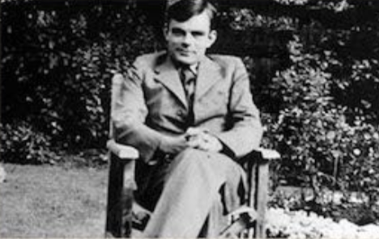
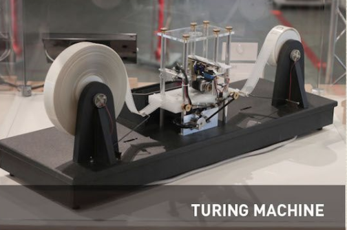
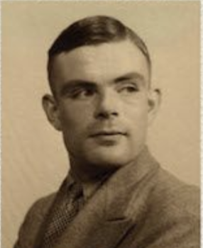
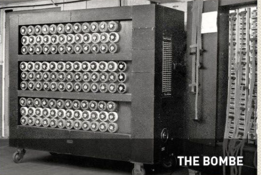
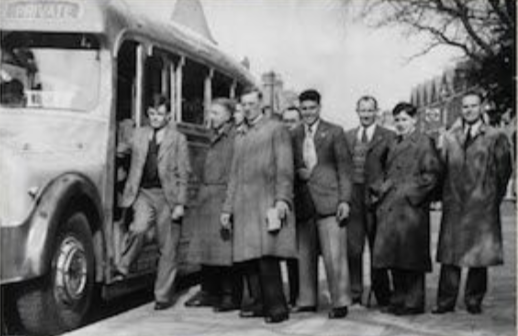
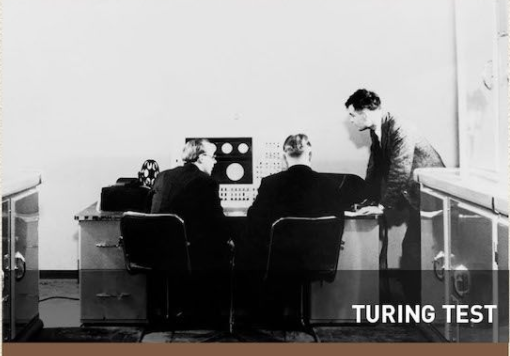

1912
June 23.
Birth: Paddington, London

Birth: Paddington, London
Sherborne School.

Death of friend Christopher Morcom.

Undergraduate at King's College Cambridge University.
Quantum mechanics, probability, logic. Fellow of King's College, Cambridge.
The Turing machine.
Princeton University. Ph.D. Logic, algebra, number theory.
Return Cambridge. Introduced to German Enigma cipher machine.
The Bombe, machine for Enigma decryption.
Breaking of U-boat Enigma, saving battle of the Atlantic.
Chief Anglo-American crypto consultant. Electronic work.
National Physical Laboratory, London.
Computer and software design leading the world.
Programming, neural nets, and artificial intelligence.
Manchester University first serious mathematical use of a computer.

The turing test for machine intelligence.
Elected FRS. Non-linear theory of biological growth.
Arrested as a homosexual, loss of security clearance.
Unfinished work in biology and physics.
Death(suicide) by cyanide poisoning, Wimslow, Cheshire.